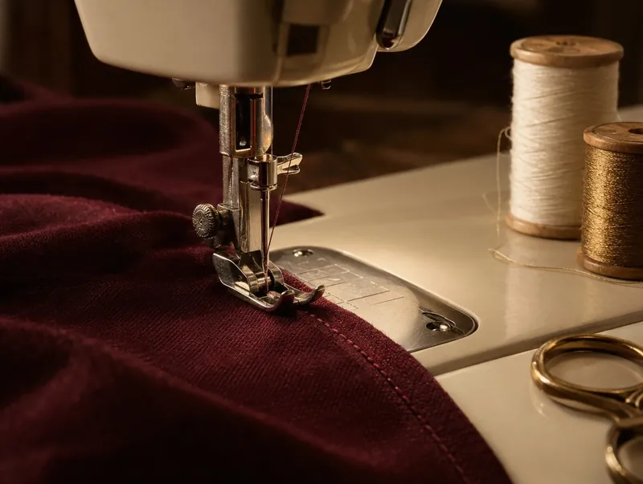

Dressmaking · Custom tailoring
Dressmaking and custom tailoring in Clarkson, Mississauga
Have something in mind? Talk to Sadaf Cleaners & Alterations about dressmaking and custom tailoring at our shop on Vanier Dr in Clarkson.
Open Mon–Fri 9 a.m.–7 p.m., Sat 9:30 a.m.–5 p.m.
Illustrative image, not a photo of the dry cleaner

04 · What we work on
Dressmaking & custom tailoring
- Dressmaking
- Custom tailoring
- Men's tailoring
Ask about stitching classes.
“Great prices, quality work, honest advice and fantastic customer service.”
Visit us at 1200 Vanier Dr #7, Mississauga, in the Clarkson–Lorne Park neighbourhood, to talk about your idea.
Bring a photo or a sketch, or attach one in the quote request form.
Leave us a Google review (opens Google Maps in a new tab)Questions about dressmaking & custom tailoring?
Call us during opening hours, or send a quote request with a photo of your garment.